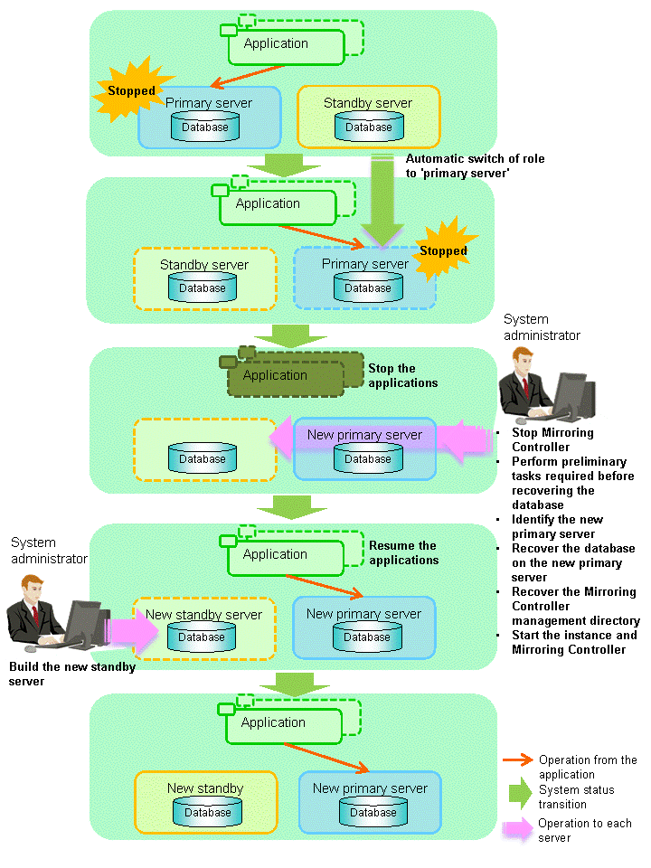

This section explains what happens when all database servers or instances on the database server have stopped, so jobs cannot continue.
See
Recovery to database multiplexing mode
Refer to "4.1.1.2 Rebuild the Standby Server" and "4.1.1.3 Failback of the Primary Server" for information on recovery to database multiplexing mode.
Overview of recovery operations
After recovering the database to the state immediately prior to the failure on a specific server comprising the database multiplexing system, restore the system.
In other words, after specifying the server on which the database is to be recovered and then recovering it as the new primary server, configure all other servers as new standby servers.
The flow of these recovery operations is shown in the figure below.
Figure 4.3 Flow of recovery operations

Perform the following procedure.
Stop applications
Stop running applications.
Stop Mirroring Controller
Execute the mc_ctl command in stop mode on all servers that comprise the database multiplexing system.
Example)
> mc_ctl stop -M D:\mcdir\inst1
Note
Forcibly stop Mirroring Controller
If Mirroring Controller does not stop, execute the mc_ctl command in stop mode with the -e option specified.
Example)
> mc_ctl stop -M D:\mcdir\inst1 -e
Perform prerequisite tasks before recovering the database
First, refer to "Actions when an Error Occurs" in the Operation Guide, and then identify the cause of the error and perform recovery of the disk on which the failure occurred, etc.
Identify the new primary server
Perform the following operations on all servers comprising the database multiplexing system, and check the server containing the backup data that shows the latest date. This server will become the new primary server, on which the database is to be recovered.
Example)In the example below, the pgx_rcvall command is executed with the -l option specified and the backup data that shows the latest date is identified.
> pgx_rcvall -l -D D:\database\inst1Date Status Dir2013-07-01 13:30:40 COMPLETE E:/backup/inst1/2013-07-01_13-30-40
Recover the database on the new primary server
Recover the database using the recovery method that uses the pgx_rcvall command based on the backup data.
Perform the following operations on all servers comprising the database multiplexing system, and check the server containing the archive log and mirrored transaction log that show the latest date.
Example)In the example below, the archive log and mirrored transaction log that show the latest date are identified.
> dir /OD <backupDataStorageDir>\*_walIf the server containing the latest archive log and mirrored transaction log is different to the new primary server identified in step 4, all files and directories under the directory shown below are copied and written to the backup storage destination directory on the new primary server.
Deployment destination directory of the archive log and mirrored transaction log
<backupDataStorageDir>\*_walExecute the pgx_rcvall command on the new primary server, specifying the backup storage destination directory of the new primary server.
Example)In the example below, the pgx_rcvall command is executed with the -B option specified.
> pgx_rcvall -B E:\backup\inst1 -D D:\database\inst1
See
Refer to "Actions when an Error Occurs" in the Operation Guide for information on the pgx_rcvall command.
Recover the Mirroring Controller management directory
Copy the files in the Mirroring Controller management directory from the backup data on the new primary server, and then perform the recovery.
Start the instance and Mirroring Controller
Start the instance and Mirroring Controller on the new primary server.
As the instance administrator user, execute the mc_ctl command in start mode.
Example)
> mc_ctl start -M D:\mcdir\inst1
As the instance administrator user, execute the mc_ctl command in start mode with the -F option specified.
Example)
> mc_ctl start -M D:\mcdir\inst1 -F
Point
After Mirroring Controller is started, automatic switch/disconnection can be enabled or disabled using the enable-failover or disable-failover mode of the mc_ctl command.
Resume applications
Resume execution of applications.
Build the new standby server
Refer to "2.5 Setting Up the Standby Server" for information on building (setting up) a standby server from the primary server.
Point
It is not necessary to repeat steps that have already been performed, such as registering to Windows services.